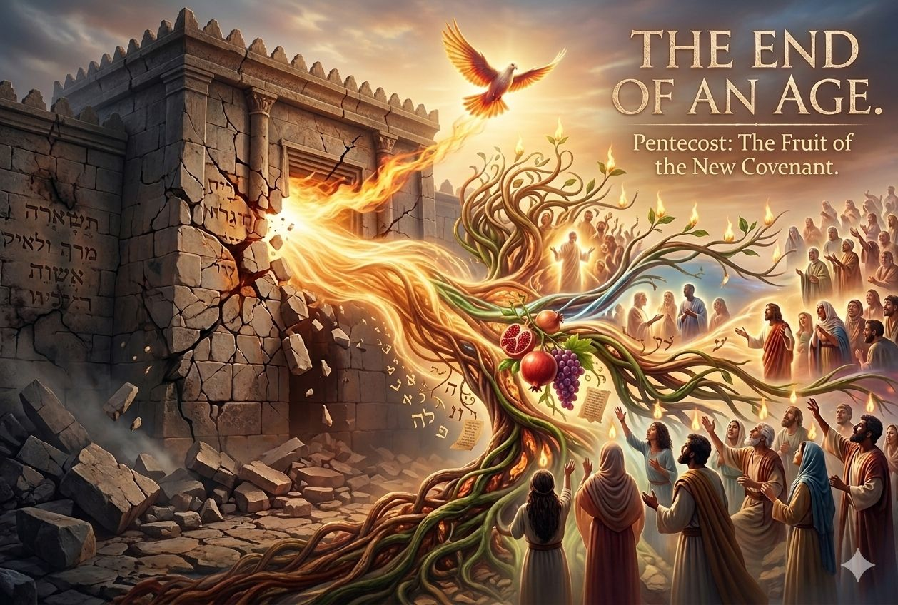

The End of an Age
Pentecost: The Fruit of the New Covenant

When Pentecost is viewed strictly through a modern lens of personal empowerment or spiritual gifts, its monumental covenantal and historical significance is entirely missed. From a perspective of audience relevance and first-century fulfillment, Pentecost wasn't just a generic blessing for the church age; it was a highly targeted, age-specific signpost marking the transition between two worlds.
Here is how Pentecost functions as an age-specific event rather than just a blueprint for ongoing charismatic experience:
1. The Sign of the "Last Days" of the Old Covenant
When Peter stands up on the Day of Pentecost to explain the supernatural phenomena (the rushing wind, tongues of fire, and speaking in languages), he does not point to a distant future. He explicitly anchors the event in his own immediate timeline by quoting the prophet Joel:
In the first-century context, the "last days" were not the last days of the physical planet, but the last days of the Old Covenant age. The old system—with its temple, Levitical priesthood, and physical sacrifices—was fading away and drawing to a close (Hebrews 8:13). Pentecost was the official, divine inauguration of that transition period, signaling that the countdown to the final destruction of the old world order in AD 70 had begun.
2. A Cosmic Warning of Approaching Judgment
We often stop reading Joel’s prophecy after the mention of dreams and visions, but Peter quotes the entire passage, including its heavy, apocalyptic judgment language:
In Hebrew prophetic imagery, the darkening of the sun and moon always symbolized the political and spiritual overthrow of ruling powers (such as Babylon in Isaiah 13 or Egypt in Ezekiel 32). By repeating this at Pentecost, Peter was warning his first-century Jewish listeners that the corporate nation of Israel was under imminent threat of covenantal wrath. The Holy Spirit's arrival was the definitive sign that the "great and awesome day of the Lord"—which culminated in the Roman siege and destruction of Jerusalem—was rapidly approaching.
3. The Power to Survive and Witness in the Transition Period
The specific empowerment of the Spirit at Pentecost served a practical, time-bound purpose for that generation. Jesus had told them they would receive power to be His witnesses (Acts 1:8). Why did they need such radical, supernatural vindication?
The "Two-Age" Overlap: Between AD 30 and AD 70, the New Covenant had been ratified by Christ's blood, but the Old Covenant temple structure was still standing. The first-century believers lived in a high-stakes, 40-year transitional generation.
Miraculous Attestation: The miraculous gifts were "signs" meant to confirm the message of the New Covenant to an unbelieving Jewish nation before the final judgment fell (1 Corinthians 14:22). They were the credentials of the Apostles as they built the foundation of the New Creation temple—a temple not made with human hands.
4. Reversing Babel and Rebuilding the House
On a deeper symbolic level, the outpouring of the Spirit at Pentecost was the direct reversal of the curse of Babel (Genesis 11). At Babel, God scattered humanity by confusing their languages. At Pentecost, God used languages to bring the scattered remnants of Israel back into one brand-new corporate body in Christ.
It was the birth of the New Creation reality where God no longer dwelt in a house of stone, but in a temple of living stones. The presence of the Spirit inside the believer was the ultimate proof that the old, external code of written laws was being replaced by the law of the Spirit written on human hearts (Jeremiah 31:33).
The Shift of Residence
When we pull Pentecost out of its first-century setting and reduce it to a doctrine about individual spiritual gifts, we minimize what it actually was: the explosive, age-specific boundary line where the glory left the old house and permanently took up residence in the New Creation.
A Question Worth Sitting With
If Pentecost signaled that God was actively moving his presence out of a temple of stone and into a people of living flesh, why do modern religious structures still fixate on physical geography, holy buildings, and behavioral management codes? Are we treating the arrival of the Spirit as an ongoing performance asset, or as the completed boundary line of our freedom?